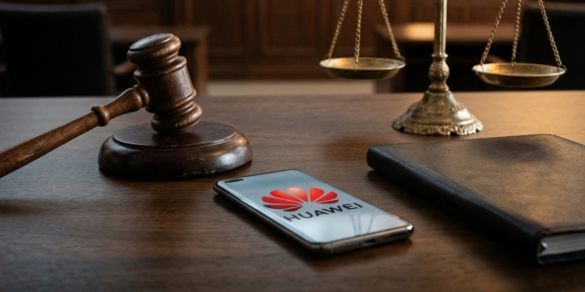

Geekotidien · Édition du 27 novembre 2026
Huawei reconnu coupable
Fraude et espionnage aux USA

Le mardi 24 novembre, Huawei a été reconnu coupable de dix des douze chefs d'accusation, après un procès d'environ trois mois et une soixantaine de témoins, selon Siècle Digital. Les chefs retenus incluent la fraude bancaire, le vol de secrets commerciaux, le racket et l'entrave à la justice.
Le jury n'a pas retenu l'entente en vue de commettre du racket. Les procureurs reprochent le vol du code source des routeurs de Cisco Systems, de la technologie d'antennes de Quintel et de données techniques de CNEX, ainsi que la dissimulation d'activités en Iran derrière une société et la tromperie de banques internationales.
En 2018, les autorités américaines ont jugé Huawei menace pour la sécurité nationale et l'ont placé sur une liste noire commerciale. Huawei juge le verdict infondé et compte faire appel.
L'article ne donne ni le tribunal, ni la peine, ni l'amende éventuelle. Il ne cite ni agence de presse ni document judiciaire ; les sources identifiées sont le communiqué de Huawei et les propos de son avocat, Brian Heberlig.
Le + : Le jury n'a pas retenu l'entente en vue de racket.